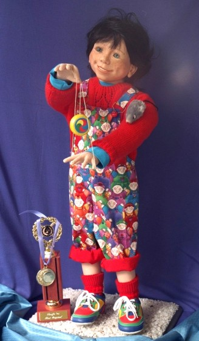

"Sunny" One day I decided I needed to practise sculpting hands. I wanted to create a doll that could do the yo-yo trick called "Rock The Cradle", so I took on the challenge of getting those hands to do what I wanted them to do. I had a little trouble with the yo-yo itself....the original one was sculpted in polymer clay and as I set it into just the right position, little Sunny did a slow tilt forward as the weight of it carried him towards a face plant into the ground below. Now Sunny, made of Modelene (Australia's own polymer clay), happily does his permanent "Rock The Cradle" with a much lighter yo-yo, made from sculpted PaperClay. His pet mouse is well trained to stay on his arm!
Sunny stands 22 inches tall. He was the proud recipient of a first place trophy in the original doll category at Sydney, Australia's "Pacific '96" Doll Show, and is now part of a private collection in Australia.
|